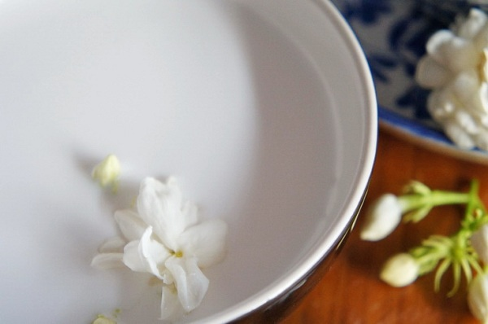

ทับทิมกรอบ สีแดงสด ๆ กินมาก็บ่อยแล้ว วันนี้จะชวนมาทำมรกตกรอบสีเขียวสดดูบ้าง เสิร์ฟขนมไทย 2 สี 2 สไตล์ มองไกล ๆ เหมือนอัญมณีเหมือนกันนะเนี่ย
ขนมไทยอย่างทับทิมกรอบ หวานหอมกะทิอบควันเทียน ตักใส่ถ้วยเสิร์ฟเย็น ๆ นี่มันฟินยิ่งกว่าอะไรดี แต่ปกติที่เราเห็นทับทิมกรอบก็มักจะเป็นสีชมพูไม่ก็สีแดง แต่วันนี้พวกเราจะชวนคุณมาทำ "มรกตกรอบสีเขียว" ใส่ลงไปด้วย เป็นสูตรมาจากคุณ BlackPiano สมาชิกเว็บไซต์พันทิปดอทคอม ที่จะช่วยเพิ่มความน่ากินเข้าไปอีก แถมยังเป็นสูตรกะทิอบควันเทียนหอม ๆ อีกด้วย
ส่วนผสม ทับทิมกรอบ
• น้ำลอยดอกมะลิ
• กะทิสำเร็จรูป 1 กล่อง
• เกลือป่น 1/2 ช้อนโต๊ะ
• ใบเตยมัดเป็นปม
• เทียนสำหรับอบขนม
• แห้ว
• สีผสมอาหารสีแดงผสมน้ำ
• สีผสมอาหารสีเขียวผสมน้ำ
• แป้งมัน
• น้ำตาลทราย (ไม่ขัดสี)
• น้ำแข็งบด
วิธีทำทับทิมกรอบ
► นำดอกมะลิมาลอยในน้ำทิ้งไว้ เตรียมไว้สำหรับทำน้ำเชื่อมเพื่อความหอมสดชื่น
วิธีทำกะทิอบควันเทียน
► ผสมน้ำกะทิกับเกลือ ใส่ใบเตยมัดเป็นปมลงไป นำขึ้นตั้งไฟ ต้มแค่พอร้อน

► จุดเทียนสำหรับอบขนมแล้วเป่าให้ดับ ใส่ลงในถ้วยเล็ก ๆ นำไปลอยในน้ำกะทิ ปิดฝาหม้อ อบทิ้งไว้ประมาณ 30 นาที จากนั้นนำเทียนขึ้นมาจุดใหม่แล้วใส่ลงไปอบซ้ำหลาย ๆ ครั้ง (ยิ่งนานยิ่งดี) เตรียมไว้วิธีทำทับทิมกรอบ
► ผสมน้ำกับสีผสมอาหารทั้ง 2 สี เตรียมไว้
► ใส่แห้วที่หั่นแล้วลงไปคลุกในสีผสมอาหารแต่ละสีให้เข้ากัน พักไว้ (ให้สีที่ตัวแห้วอิ่มตัวดี ๆ อยากแดงมากก็ทิ้งนาน ๆ แดงน้อยก็ทิ้งแป๊บเดียว)
>
► นำไปลวกในน้ำเดือดจนแห้วลอยขึ้นมา
วิธีทำน้ำเชื่อมใส่ทับทิมกรอบ

ขนมไทยหลากสีสัน 2 สี 2 สไตล์แถมยังได้กลิ่นหอม ๆ จากทั้งน้ำเชื่อมที่มีกลิ่นของมะลิ และน้ำกะทิหอมควันเทียน ได้กินสักคำคงจะวางช้อนไม่ลงทีเดียว
ขอขอบคุณข้อมูลและภาพประกอบจาก
คุณ BlackPiano สมาชิกเว็บไซต์พันทิปดอทคอม
Copyright © EAT&EAT nc. สงวนลิขสิทธิ์